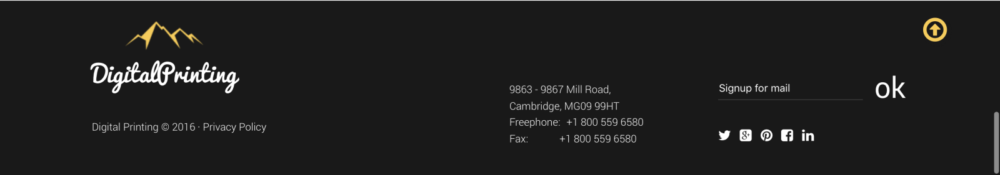

Janay Peters
About Me
My name is Janay Peters and I currently live in Atlanta,Ga. I was born in Mobile,Al and have lived in Georgia for 8 years now.
I love to play tennis and dance; I've had a love for technology my whole life, but didn't know that I wanted to go into Web Design
until my sophomore year in high school. I love Full Sail University and am so happy to attend this awesome school.
Component 1: Header Navigation Bar

What I hope to learn
I hope to learn how to make my navigation bar position where and how I want it to go. Positioning, sizing, floating, and in-line block are the main parts
of creating this, which are things I struggle with so I know it will be a challenge.
How I feel this relates to what I have learned
Well, I know that a navigation is easy access to the other main components of the website (Contacts, Information, or a gallery). The navigation is
one of the nost important parts of the web page to me, because it is the first thing you see other than the logo. I have also learned that there
are many different styles of the navigation. I will be using a simple one, but they all accomplish the same thing; allowing the user to navigate quickly and easly.
Component 2: Services

What I hope to learn
I hope to learn how to better use inline and float. I know that this will be my main objective for most of these
components, because it is one of those things that I just don't get. I hope to be able to position the icons
where they belong, as well as line up the text "in-line" below.
How I feel this relates to what I've learned
I feel this relates to the page that I created in one of my other classes. We were to look at the picture and recreate it
through code and I had such a hard time creating the "About us" due to inline and Float, so hopefully this time I will be able
to pick it up.
Component 3: Our Creators

What I hope to learn
This component is similar to the last. I hope to be able to create this and feel confident that I have done it correctly, but also know
what I how to do it before drawing up any code.
How I feel this relates to what I have learned
I feel that this relates to many of the issues that I have when it comes to coding. Creating a section that shows "Our creators"
allows the user to get a feel of who created this page and all about who they are. I like seeing these things on websites because it's interesting
to see other developers background.
Component 4: Testimonials

What I plan to learn
I plan to learn how to align my arrows, images, and text in there correct places. I know that I will still use Float and inline tags.
I really love to see testimonials on a website because it really sends a good message to the users or potential buyers.
How I fee this relates to what I've learned
This relates to a few things that I've learned, but not many. I have never created a news feed or testimonial section before. I have
some experience with making image slide shows so it could be same.
Component 5: Footer

What I plan to learn
I plan on learning how to place the social media icons where they are inline, as well as adding a "back to top" arrow. I love
footers and I really feel like they bring the page together with all of the information that most users look for in order to
contact your company.
How I feel this relates to what I've learned
I feel that this relates to what I have done before. I really think my footer and header are the best things that I know how to do.